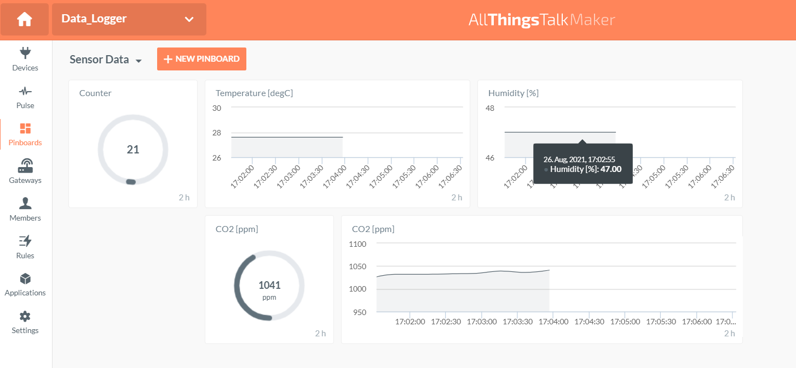

Data Logger - Software

The data logger software is very straightforward.
def read_serial(com_port, baud_rate):
ser = serial.Serial(com_port, baud_rate, bytesize=8, parity='N',\
stopbits=1, timeout=1)
ser.flush()
ser.write(bytes(b"s"))
time.sleep(2) # wait two seconds, the default configuration is used where SCD30 has data ready every two seconds.
data = ser.read(24)
ser.close()
return data
def send_data(device, timestamp, sensor_data):
"""
Sample the sensor data and send it to the Cloud.
Parameters
----------
device: type dict
device description (defined in a json file)
timestamp: type str
UTC time
sensor_data: type list
['OK', counter, Temperature_degC, Humidity_perc, CO2_ppm, 'X\r\n']
Returns
-------
message: str
ConnectionOK: data is send successful
ConnectionError: a Connection error occurred. (https://docs.python-requests.org/en/master/_modules/requests/exceptions/)
HTTPError: an HTTP error occurred (https://docs.python-requests.org/en/master/_modules/requests/exceptions/)
"""
url = "https://"+device["device"]["authentication"]["api"]\
+"/device/"+device["device"]["authentication"]["Device_ID"]\
+"/state"
headers = {
'Content-Type': 'application/json',
'Authorization': device["device"]["authentication"]["Ground_Token"]
}
payload = {
device["device"]["assets"]["asset#0"]["name"]:
{"value": sensor_data[1],
"at": timestamp},
device["device"]["assets"]["asset#1"]["name"]:
{"value": sensor_data[2],
"at": timestamp},
device["device"]["assets"]["asset#2"]["name"]:
{"value": sensor_data[3],
"at": timestamp},
device["device"]["assets"]["asset#3"]["name"]:
{"value": sensor_data[4],
"at": timestamp}
}
try:
response = requests.request("PUT", url, headers=headers, json=payload,\
timeout=int(device["device"]["authentication"]["timeout"]))
response.raise_for_status()
message = 'ok'
return message
except requests.exceptions.ConnectionError as exception:
message = 'ConnectionError'
return message
except requests.exceptions.HTTPError as exception:
message = 'HTTPError'
return message
Below is an example code where we send ten samples to the Cloud. The time between the samples equals 20 seconds.
import time
import datetime
import json
import requests
import serial
with open('device.json') as json_file:
device = json.load(json_file)
# Time between two samples
SAMPLING_TIME = 20
# Read 10 samples and send the output to the Cloud
for i in range(10):
start_sample = time.perf_counter()
timestamp = datetime.datetime.utcnow().isoformat()
sensor_data = read_serial(device["device"]["serial"]["com_port"],\
device["device"]["serial"]["baud_rate"]).decode("utf-8").split(',')
response = send_data(device, timestamp, sensor_data)
print('sample:',i, ' - ', timestamp,' - ', sensor_data, ' - ', response)
finish_sample = time.perf_counter()
time.sleep(int(SAMPLING_TIME) - int(round(finish_sample - start_sample, 2)))
Terminal output:
sample: 0 - 2021-08-26T15:00:54.008322 - ['OK', '12', '27.6', '47', '1022', 'X\r\n'] - ok
sample: 1 - 2021-08-26T15:01:14.346990 - ['OK', '13', '27.6', '47', '1012', 'X\r\n'] - ok
sample: 2 - 2021-08-26T15:01:34.609076 - ['OK', '14', '27.6', '47', '1028', 'X\r\n'] - ok
sample: 3 - 2021-08-26T15:01:54.859678 - ['OK', '15', '27.6', '47', '1032', 'X\r\n'] - ok
sample: 4 - 2021-08-26T15:02:15.140923 - ['OK', '16', '27.6', '47', '1032', 'X\r\n'] - ok
sample: 5 - 2021-08-26T15:02:35.407105 - ['OK', '17', '27.6', '47', '1033', 'X\r\n'] - ok
sample: 6 - 2021-08-26T15:02:55.652324 - ['OK', '18', '27.6', '47', '1034', 'X\r\n'] - ok
sample: 7 - 2021-08-26T15:03:15.899682 - ['OK', '19', '27.6', '47', '1039', 'X\r\n'] - ok
sample: 8 - 2021-08-26T15:03:36.152096 - ['OK', '20', '27.6', '47', '1036', 'X\r\n'] - ok
sample: 9 - 2021-08-26T15:03:56.556891 - ['OK', '21', '27.6', '47', '1041', 'X\r\n'] - ok
Pinboard

Note.
The com_port and baud_rate are defined in device.json
"serial": {
"com_port": "com14",
"baud_rate": "115200"
}